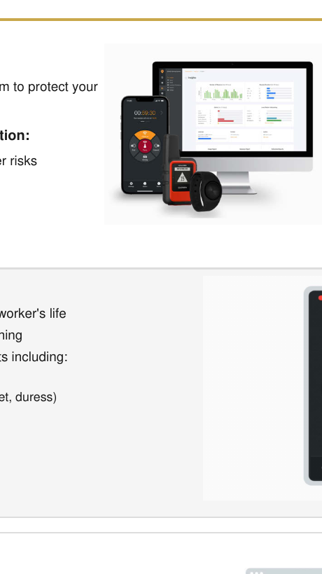
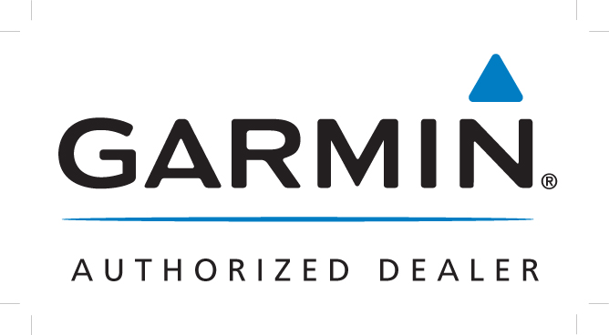

Business 5G
Use T-Mobile cellular service for supported calls, messaging, data, navigation, and business applications wherever network coverage is available.
Give employees access to T-Mobile business 5G where cellular coverage is available, plus T-Satellite capabilities on compatible devices in supported outdoor areas. Add the Lone Worker App for check-ins, location-aware alerts, fall detection, panic and duress workflows, and 24/7 monitoring options.
Includes T-Satellite. AutoPay, taxes, fees, device eligibility, coverage, and other terms apply.
Tell us where your employees operate. An All Road SAT specialist will help evaluate plans, compatible devices, T-Satellite availability, and Lone Worker options.
All Road SAT helps organizations deploy T-Mobile SuperMobile plans for employees operating beyond conventional offices—from utilities and transportation to energy, mining, offshore operations, emergency response, and remote field service.
Where T-Mobile cellular service is available, teams use business 5G for everyday calling, messaging, data, navigation, and work applications. When a compatible device is outside traditional coverage, T-Satellite may provide texting and access to select satellite-optimized apps in most supported outdoor areas with a view of the sky.
Includes T-Satellite on compatible devices
With AutoPay; plus taxes and fees. Limited-time pricing and plan terms are subject to change.
The solution combines business wireless service, compatible-device satellite capabilities, and optional workforce tools. Available functions vary by plan, device, app configuration, location, and conditions.
Use T-Mobile cellular service for supported calls, messaging, data, navigation, and business applications wherever network coverage is available.
Compatible devices may access texting and select satellite-optimized apps in supported outdoor areas where cellular coverage is unavailable and the sky is visible.
Add worker check-ins, welfare checks, fall and non-movement detection, low-signal and low-battery alerts, and configurable panic or duress workflows.
Manage alerts, review location information, monitor usage, and support response workflows through a centralized dashboard and optional 24/7 monitoring.
Every deployment should be evaluated around the actual operating area, compatible devices, coverage conditions, organizational procedures, and response requirements.
Support crews working across remote pits, haul roads, exploration areas, and isolated facilities.
Evaluate cellular and supported satellite connectivity for qualifying offshore, coastal, and remote energy operations.
Add a communication option for restoration and response teams working where terrestrial infrastructure may be impaired.
Support inspection, repair, construction, and restoration teams across remote service territories.
Evaluate additional communication layers for high-demand conditions, temporary sites, and mobile operations.
Support drivers, maintenance personnel, and field employees traveling through rural and limited-coverage areas.

Mobile app, compatible alert device, and centralized Lone Worker HubThe Lone Worker program is designed to fit into established worker procedures while giving organizations tools to identify risks, manage alerts, and support response workflows.
All Road SAT can also help organizations evaluate T-Mobile 5G Business Internet for primary, temporary, or backup connectivity at qualifying addresses.
Starting at
$60/monthAll Road SAT works across established satellite communications and field-connectivity ecosystems. Partner status, products, and availability vary by provider.

These relationships support All Road SAT’s ability to help organizations evaluate cellular, satellite, hybrid, compatible-device, and field communication requirements.
All Road SAT helps organizations move beyond a one-size-fits-all wireless purchase by evaluating coverage, devices, plan requirements, field workflows, deployment needs, and ongoing support together.
Guidance informed by satellite, cellular, and coverage-challenged operating environments.
Evaluate plans, compatible devices, T-Satellite capabilities, Lone Worker workflows, and fixed wireless options together.
Assistance with plan selection, activation, device requirements, implementation, and ongoing connectivity needs.
Experience supporting demanding use cases across public safety, utilities, transportation, energy, government, and field operations.
Tell us where your employees work, the coverage challenges they face, and the tools they need. We will help evaluate eligible SuperMobile plans, compatible devices, T-Satellite availability, Lone Worker features, and business internet options.
T-Mobile SuperMobile business cellular plans, including T-Satellite capabilities on eligible plans and compatible devices, with optional Lone Worker App features and related support from All Road SAT.
No. Texting and select satellite-optimized apps are available with compatible devices in most supported outdoor areas where the sky is visible. Satellite service, including 911, may be delayed, limited, interrupted, or unavailable.
Available configurations may include check-ins, welfare workflows, fall detection, non-movement alerts, panic or duress alerts, low-signal and low-battery notifications, location-aware alerts, reporting, and optional monitoring.
A compatible physical button provides another way to initiate an alert through the configured Lone Worker solution. It is not the cellular or satellite service itself and does not guarantee connectivity, emergency response, or worker safety.
Potential use cases include utilities, mining, energy, transportation, public safety, remote construction, offshore operations, disaster response, government field teams, and employees working alone.
Yes. At eligible addresses, T-Mobile 5G Business Internet may be used for primary, temporary, or backup fixed wireless connectivity.